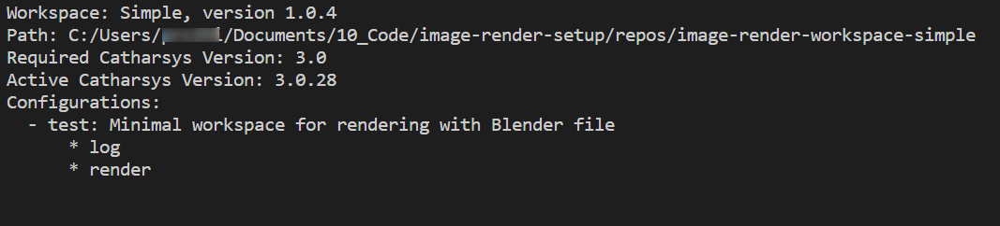

Catharsys Installation#
These are the basic steps to install the image render system Catharsys from scratch. There are two modes of installation, which are both described in this document:
a distribution install from a
.zippackage, if you just want to use Catharsys,a develop install from a fork, if you want to modify or contribute code.
The Catharsys modules are entirely written in Python and the software repositories can be installed locally via pip. However, the modules are currently not available on pypi. Instead, there is an installation script that prepares the environment and installs all the packages you need.
Pre-requisites#
Prepare the following, before you start installing Catharsys.
Python
An Anaconda (miniconda) Python installation is needed.
Blender
To render images with Blender, you need to download an archive version (*.zip, *.tar.gz) of the Blender you need from the Blender download page or the Blender index of all releases.
Do not unpack the archive right now. This will be done later on by a Catharsys tool.
Note
Catharsys has to install Blender in a special Catharsys folder, because the Catharsys code is installed in the Python distributon that comes with Blender. Therefore, there is a separate Blender installation for each Blender version (Major.Minor version) and for each Catharsys version (Major.Minor version), so that they can be used side-by-side.
Visual Studio Code
Visual Studio Code gives you a very good interface to work with Catharsys configurations and to run actions (e.g. render jobs) also on remote machines and GPU clusters.
Catharsys System#
For a distribution installation from a
.zipfile, go to this document.For a development install from a fork of the
image-render-*repositories, read on here.
IMPORTANT
Only carry on, if you successfully installed the system with one of the above workflows.
The cathy command#
You can access the cathy commands from any folder, as long as you are in the cex1 environment.
To get help for any cathy command, use the -h or --help option as in:
Shell
cathy [command [sub-command]] -h
If a command returns with an error and you think it’s a bug, or you do not understand where the error is comming from, run the command again with the --debug option. This should show a trace, where in the code the error occurred. Note, that the option --debug must be the first element after cathy for any command. For example,
Shell
cathy --debug [command [sub-command]] [option [...]]
Tip
See Command-Line Tool cathy for more information on cathy
Blender#
Since Catharsys needs to install itself in the Python environment that comes with Blender, the Blender installation is done by a Catharsys tool. Blender will be installed in the path
~/.catharsys/[Conda environment]/[Catharsys version]/Blender/[Blender archive folder]
For example, for Catharsys 3.0 installed in the Conda environment cex1 and the Blender archive blender-3.2.2-windows-x64.zip, Blender will be unpacked in the folder:
~/.catharsys/cex1/3.0/Blender/blender-3.2.2-windows-x64
In this way, each Catharsys version has its’ own group of Blender installs. In addition, the following symbolic link (or junction in Windows) is created, that points to the above folder:
~/.catharsys/cex1/3.0/blender-3.2
This link always points to the latest Blender 3.2 version installed.
Note
The Blender configuration and add-ons are installed per workspace configuration. This will be shown later on.
To install the Blender archive, run the following command in the cex1 Anaconda environment and the path where the Blender archive is located:
Shell
cathy blender install ./blender-3.2.2-windows-x64.zip
This will install Blender and install all Catharsys modules in Blender Python.
Example Workspace#
The image render setup includes a number of template workspaces, that you can use as starting points for your own projects. You can obtain a list of the available templates with the command:
Shell
cathy install template --list
Install Example Workspace#
Let´s go ahead and create a workspace based on the just-render template workspace. In this example, we navigate to the folder ~/code and run the following shell command:
Shell
cathy install template workspace-just-render
You will be prompted for a new name for the workspace and a name for a configuration. In this example, we choose cws-just-render for the workspace name and trial-01 for the configuration name.
There should now be a folder cws-just-render. There are just a few more steps we need to do before we can render images.
For the following steps, we will change into the newly created workspace directory via
Shell
cd cws-just-render
Initialize for VS-Code use#
To initialize the workspace for use with VS-Code run:
Shell
cathy code init
This generates a workspace file for VS-Code and installs the functional json (ison) syntax highlighter add-on. This add-on implements syntax highlighting for *.json, *.json5 and *.ison (functional json) files.
Note
When you opened a *.json, *.json5 or *.ison file in VS-Code, click on the selected language type in the bottom right of VS-Code window and select ison from the set of choices, to enable the addon for this file type.
Open the Workspace in VS-Code#
You can now open the workspace in VS-Code directly from the command line via
Shell
cathy code show
You need to be in the workspace folder for this to work.
This command first looks for a user install of VS-Code. If it cannot find that, it tries to open a system install. If that installation also cannot be found, if checks whether the command code is availabe and deduces the path to VS-Code from there.
Should this command not work for you, simply open the workspace file directly from VS-Code.
Note
The generated workspace file also defines the default terminal for Windows and Linux. This calls one of the initialization scripts to activate the appropriate Anaconda environment. These scripts are located in the .catharsys folder in the workspace. This has the advantage that when you open the workspace file directly from the recent folder list of VS-Code, the integrated terminal will automatically switch to the correct Anaconda workspace.
Workspace Info#
Each workspace may contain a number of configuration projects. Each project consists of a set of configuration files that describe a set of actions, like rendering, post-processing, etc. All configuration files of a workspace must be in the folder config. To list all available configuration projects and their respective actions, run the following command:
Shell
cathy ws info
This will generate an output like this:
The configurations are the folders in the config folder and the names listes after the * are the actions per configuration.
Initialize Blender for Workspace#
Before you can render images with Blender using a project configuration in the workspace, you need to initialize Blender for that project configuration. This sets default user preferences and installs the add-ons needed by a configuration of the workspace. The add-ons are specified in the execution configurations of a project.
Note
The structure of Workspaces for Blender rendering is discussed here.
To initialize the project configuration trial-01 run the following command:
Shell
cathy blender init -c trial-01
This command also checks whether Catharsys is installed in the Blender Python and installs it if not. To avoid checking for the installation every time you update the Blender configuration, you can run the command:
Shell
cathy blender init -c trial-01 --addons
Open Blender for a configuration action#
A rendering configuration references the Blender file to use in a trial file, which in turn is referenced by an action. To open the blender file that is used by the action render of the configuration test, run the command:
Shell
cathy blender show -c trial-01 -a render
This opens the correct Blender version with the correct Blender configuration for the Catharsys action.
Note
Note that actions can have any name. That is, an action that renders something does not necessarily have the name render.
Launch a rendering job#
Finally, let’s launch the rendering action render for configuration trial-01 with:
Shell
cathy ws launch -c trial-01 -a render
This should start Blender in background mode and render six images in the folder ./_render/rq0004/trial-01/Camera/delta_rot_01/rot_01/Image.
Catharsys API#
Instead of working with workspaces from the command line, you can also use the Catharsys API. This is especially nice, when you are using Jupyter notebooks. They are available directly in VS-Code as well.
As an example, open the cws-just-render in VS-Code and open the file ./config/trial-01/launch.ipynb. When you open the notebook for the first time, you will have to select the python kernel the notebook is run with. This can be selected in the top right corner of the notebook window. Ensure that is says cex1 in this example.
Now execute the Code blocks in the document to launch the action and display the resultant images. The API objects and commands can be used in any Python program, so you can write an automation for the rendering automation system ;-)
What’s next?#
The next step is to understand the basic workspace and configuration structure, so that you can define your own workspaces and use Catharsys productively.